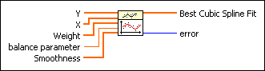
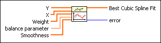
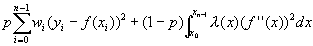
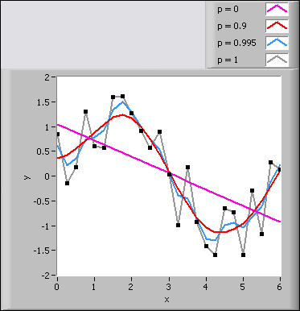

Cubic Spline Fit VI
Owning Palette: Fitting VIs
Requires: Full Development System
Uses cubic spline fitting to smooth a data set (X, Y) according to the balance parameter.

 Add to the block diagram Add to the block diagram |
 Find on the palette Find on the palette |
Owning Palette: Fitting VIs
Requires: Full Development System
Uses cubic spline fitting to smooth a data set (X, Y) according to the balance parameter.

| Add to the block diagram |
Find on the palette |
 |
Y is the array of dependent values. Y must contain at least two points. |
|
X is the array of independent values. X must be the same size as Y. The elements of X must be in ascending order. |
|
Weight is the array of weights for the observations (X, Y). Weight must be the same size as Y. Weight also must contain non-zero elements. If an element in Weight is less than 0, the VI uses the absolute value of the element. If you do not wire an input to Weight, the VI sets all elements of Weight to 1. |
 |
balance parameter specifies the balance between the smoothness of the cubic spline fit and the accuracy with which it fits the observations. balance parameter must fall within the range [0, 1]. If balance parameter is 0, the cubic spline fit is equivalent to a linear fit. If balance parameter is 1, the cubic spline fit interpolates between the data points. If balance parameter is out of the range [0, 1], this VI calculates an appropriate value for balance parameter automatically according to the values of X. |
|
Smoothness controls the smoothness for each interval between two contiguous data points. The larger the Smoothness, the smoother the curve. The number of elements in Smoothness must be n–1, where n is the length of Y. If Smoothness is unwired, this VI sets all elements of Smoothness to 1. |
 |
Best Cubic Spline Fit returns the y-values of the fitted model. |
 |
error returns any error or warning from the VI. You can wire error to the Error Cluster From Error Code VI to convert the error code or warning into an error cluster. |
This VI fits the observations (X, Y) by minimizing the following function:

p is the balance parameter. wi is the ith element of Weight. yi is the ith element of Y. xi is the ith element of X. f"(x) is the second-order derivative of the cubic spline function, f(x).  (x) is the piecewise constant function
(x) is the piecewise constant function
(x) = i, xi  x < xi+1, for i = 0, 1, … , n–2
x < xi+1, for i = 0, 1, … , n–2
where i is the ith element of Smoothness.
If p = 0, the fitted model is equivalent to a linear model. If p = 1, the fitting is equivalent to cubic spline interpolation. p must fall in the range [0, 1] to make the fitted curve both close to the observations and smooth. The closer p is to 0, the smoother the fitted curve. The closer p is to 1, the closer the fitted curve is to the observations. The following front panel shows the fit results when p takes different values.
